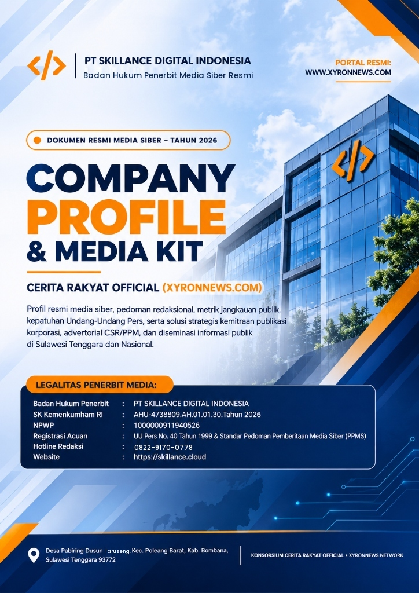

SK Kemenkumham RI: AHU-A138609.AH.01.30.Tahun 2026 • NPWP Badan: 100000011940526 • NIB OSS Terdaftar
Alamat Kantor: Desa Pabiring Dusun Taruseng, Kec. Poleang Barat, Kab. Bombana, Sulawesi Tenggara 93772
Website: https://skillance.cloud • Surel: redaksi@xyronnews.com • Hotline/Redaksi: 0822-9170-0778
CERITA RAKYAT OFFICIAL (beroperasi melalui portal siber utama xyronnews.com) adalah media massa siber profesional yang didirikan dengan semangat mengangkat realitas sosial, dinamika pembangunan daerah, serta menyuarakan aspirasi masyarakat secara konstruktif dan berimbang. Berkedudukan di Provinsi Sulawesi Tenggara dengan cakupan jejaring informasi regional hingga nasional, Cerita Rakyat Official hadir sebagai pilar informasi independen yang menjunjung tinggi etika jurnalistik.
Diterbitkan secara sah oleh badan hukum perseroan PT SKILLANCE DIGITAL INDONESIA, media ini mengintegrasikan jurnalisme investigatif yang bertanggung jawab dengan teknologi digital terkini, memungkinkan setiap karya jurnalistik didistribusikan secara cepat, tepat sasaran, dan memiliki daya jangkau publik yang terukur secara analitik.
MISI UTAMA:
Dalam setiap kegiatan jurnalistik dan operasional redaksi, Cerita Rakyat Official tunduk dan patuh pada:
SK Kemenkumham RI: AHU-A138609.AH.01.30.Tahun 2026 • NPWP Badan: 100000011940526 • NIB OSS Terdaftar
Alamat Kantor: Desa Pabiring Dusun Taruseng, Kec. Poleang Barat, Kab. Bombana, Sulawesi Tenggara 93772
Website: https://skillance.cloud • Surel: redaksi@xyronnews.com • Hotline/Redaksi: 0822-9170-0778
Berdasarkan Pasal 9 ayat (2) UU Pers No. 40/1999 yang mewajibkan setiap perusahaan pers berbadan hukum Indonesia, seluruh aktivitas operasional, komersial, periklanan, dan kerja sama kemitraan Cerita Rakyat Official diselenggarakan di bawah badan hukum perseroan resmi:
| Nama Badan Usaha | PT SKILLANCE DIGITAL INDONESIA |
| Bentuk Badan Hukum | Perseroan Terbatas (PT) Swasta Nasional |
| Pengesahan Menkumham RI | Nomor: AHU-A138609.AH.01.30.Tahun 2026 |
| NPWP Badan Usaha | 100000011940526 |
| Nomor Induk Berusaha (NIB) | Terdaftar Resmi Sistem Online Single Submission (OSS RBA) |
| Klasifikasi Baku Usaha (KBLI) |
• 58130: Penerbitan Surat Kabar, Jurnal, dan Buletin atau Majalah • 63122: Portal Web dan/atau Platform Digital dengan Tujuan Komersial |
| Rekening Bank Resmi PT | Bank Mandiri / BSI Rekening Giro Korporat a.n. PT SKILLANCE DIGITAL INDONESIA |
Manajemen Cerita Rakyat Official dikelola oleh tenaga jurnalis, analis media, dan praktisi IT yang berdedikasi menjaga kualitas dan keberlanjutan publikasi:
| Jabatan Organisasi | Nama Pejabat | Tanggung Jawab Utama |
|---|---|---|
| Pemimpin Umum | MUH. RAHWAN | Penanggung jawab umum seluruh lini redaksional & korporasi |
| Pemimpin Perusahaan | MUH ARSYAD RAMSI | Pengelola kemitraan bisnis, legalitas, keuangan & operasional |
| Pemimpin Redaksi | Muh. Rahwan | Penanggung jawab produk berita & kepatuhan kode etik pers |
| Redaktur Pelaksana | Muh. Rahwan | Koordinasi harian agenda liputan & kurasi naskah |
| Redaktur Advertorial & CSR | Muh. Rahwan | Spesialisasi riset & peliputan program pemberdayaan korporasi |
| Teknologi & Infrastruktur Cloud | Divisi IT PT Skillance | Pengelolaan server, uptime portal, optimasi SEO & keamanan siber |
SK Kemenkumham RI: AHU-A138609.AH.01.30.Tahun 2026 • NPWP Badan: 100000011940526 • NIB OSS Terdaftar
Alamat Kantor: Desa Pabiring Dusun Taruseng, Kec. Poleang Barat, Kab. Bombana, Sulawesi Tenggara 93772
Website: https://skillance.cloud • Surel: redaksi@xyronnews.com • Hotline/Redaksi: 0822-9170-0778
Dengan integrasi teknologi optimasi mesin pencari (SEO) dan jejaring distribusi multi-kanal, portal siber xyronnews.com mencatatkan pertumbuhan pembaca aktif yang signifikan:
| Kanal Rubrik | Fokus Muatan & Nilai Strategis bagi Mitra |
|---|---|
| Fokus CSR & PPM | Ulasan mendalam mengenai implementasi program sosial korporasi bagi masyarakat lingkar industri (pendidikan, kesehatan, infrastruktur desa, pemberdayaan UMKM). |
| Tambang, Energi & K3 | Publikasi kepatuhan tata kelola lingkungan (*Good Mining Practice*), sertifikasi K3, inovasi reklamasi lahan, serta keselamatan operasional industri. |
| Daerah & Pembangunan | Berita dinamika kebijakan pemerintah daerah, sinergi investasi, dan geliat ekonomi masyarakat Sulawesi Tenggara. |
| Siaran Pers Mitra | Kanal khusus penayangan rilis resmi mitra korporasi guna klarifikasi fakta, tangkal hoaks, dan diseminasi prestasi perusahaan. |
SK Kemenkumham RI: AHU-A138609.AH.01.30.Tahun 2026 • NPWP Badan: 100000011940526 • NIB OSS Terdaftar
Alamat Kantor: Desa Pabiring Dusun Taruseng, Kec. Poleang Barat, Kab. Bombana, Sulawesi Tenggara 93772
Website: https://skillance.cloud • Surel: redaksi@xyronnews.com • Hotline/Redaksi: 0822-9170-0778
Cerita Rakyat Official menyediakan opsi kemitraan publikasi yang dirancang khusus untuk memenuhi standar pertanggungjawaban korporasi dan keterbukaan informasi:
| Bentuk Layanan | Deskripsi & Output Pekerjaan | Dokumen Pendukung |
|---|---|---|
| Publikasi Siaran Pers | Penerbitan rilis pers resmi kegiatan korporasi di portal siber dan jaringan distribusi berita terverifikasi. | Link Berita + Kliping PDF |
| Advertorial In-Depth CSR | Liputan tematik terarah mengenai dampak positif program PPM/CSR di desa lingkar operasional lengkap dengan foto berkualitas tinggi. | Laporan Dokumentasi Khusus |
| Official Partner Branding | Penayangan logo dan banner kemitraan resmi pada homepage portal xyronnews.com sebagai wujud transparansi kemitraan. | Sertifikat Mitra Resmi |
| Laporan LPJ Berkala | Penyusunan Berita Acara Verifikasi, rekapitulasi bukti tayang, dan kliping digital sebagai dokumen audit akuntabilitas perusahaan. | Buku LPJ Fisik & Digital |
Demikian Company Profile & Media Kit ini disusun secara resmi untuk dipergunakan sebagai pedoman informasi, acuan kerja sama publikasi, serta bukti kredibilitas legalitas Cerita Rakyat Official di bawah naungan PT Skillance Digital Indonesia.